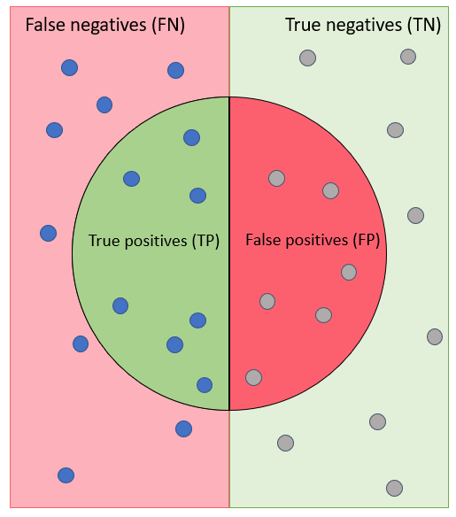
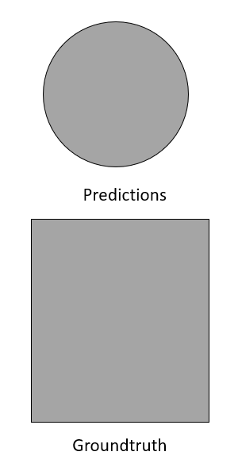
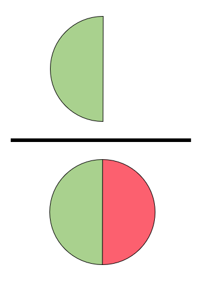
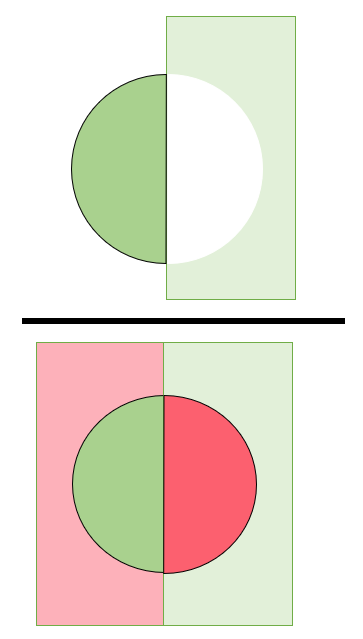
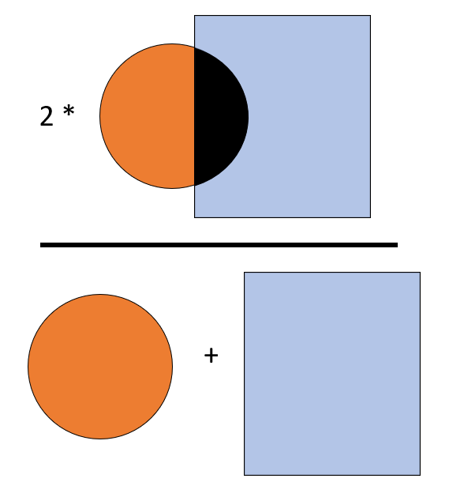
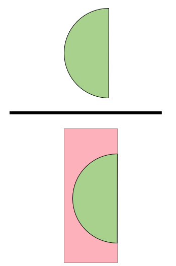
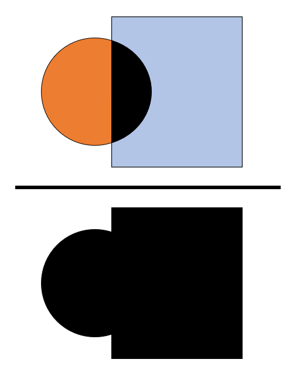

When hovering over each metric, a small description, a drawing and the equation will be shown.
The drawings are all based over these representations of the predictions and the groundtruths.
For a binary classification problem (as in Preset 1), the scores represent the metric computed.
For a multi-class problem (Preset 2 and OCT), the scores are only given for the kappa metric and otherwise represented either in the micro- or macro-average.
For a multi-class problem, this column shows the micro-average of the metrics.
The micro-average aggregates the contributions of all classes in order to compute the average metric.
Micro-averaged metrics are better when there is a class imbalance.
For a multi-class problem, this column shows the macro-average of the metrics.
The macro average computes the metric independently for each class and then takes the average over all classes (treating all classes equally).

Fraction of relevant instances among the retrieved instances (w.r.t sensitivity).
Metric ranges from 0 to 100 %.

Percentage of pixels in the segmentation that are correctly classified.
Metric ranges from 0 to 100 %.
{{'$$accuracy = TP + TN$$'}}

2* Area of overlap divided by the total number of pixels in both images.
It can be seen as an harmonic mean of the precision and sensitivity.
Metric ranges from 0 to 100 %.
{{'$dice = \frac{2|A \cap B|}{|A| + |B|}$'}}
{{'$dice = \frac{2 \cdot TP}{2 \cdot TP + FP + FN}$'}}
 Probability of predicting a negative test.
Probability of predicting a negative test.
Metric ranges from 0 to 100 %.
{{'specificity = \frac{TN}{TN + FP}'}}

Fraction of relevant instances that were retrieved (w.r.t. precision) or
probability of predicting a positive test (w.r.t specificity).
There is a balance to be found between precision and sensitivity (recall) and between sensitivity and specificity.
Metric ranges from 0 to 100 %.
{{'specificity = \frac{TP}{TP + FN}'}}
Tells us how much the classifier is better than a random guess.
Metric ranges from negative values to 1.
Negative values mean that the classifier is performing less accurately than a random guess (0).
Metric of 1 indicates a perfect classifier.
{{'$$ \kappa = \frac{2 \times (TP \times TN - FN \times FP)}{(TP + FP) \times (FP + TN) + (TP + FN) \times (FN + TN)} $$'}}

Intersection over Union (Jaccard Index).
Overlap between the predicted segmentation and the groudtruth divided by the area of union between both.
Metric ranges from 0 to 100 %.
{{'$$IoU = \frac{|A \cap B|}{|A \cup B|}$$'}}
{{'$$IoU = \frac{TP}{TP + FP + TN}$$'}}